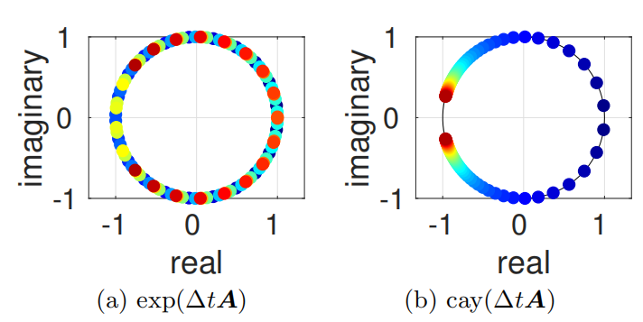
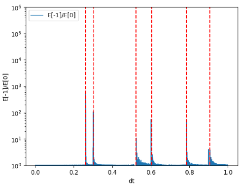
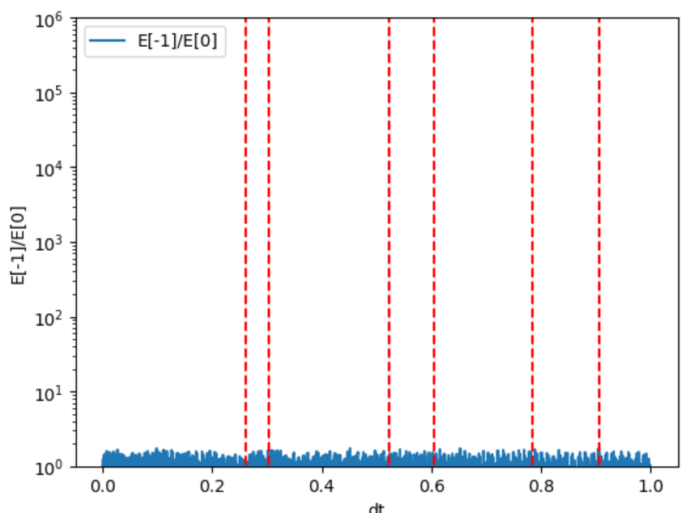
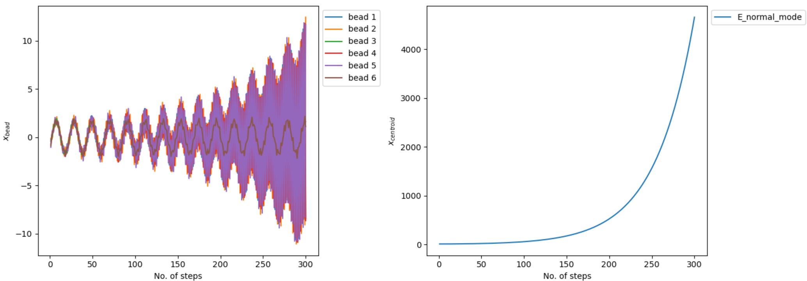
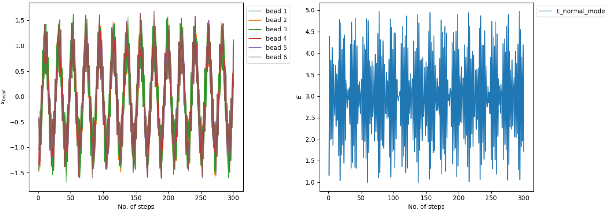
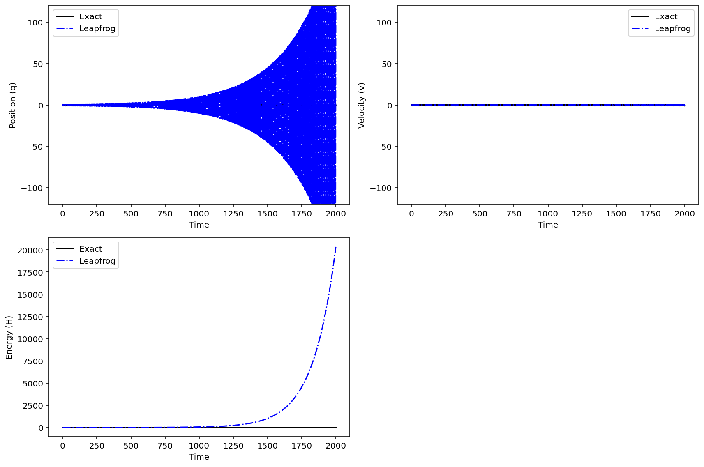

PIMD Series - Part III
Cayley Stability
Parts I-II built the ring-polymer sampling problem and its NVT thermostat layer. This note focuses on a separate numerical issue: the standard exact normal-mode propagation of the free ring polymer can be fragile at special timesteps. The Cayley transform changes only this free ring-polymer substep, but removes the eigenvalue-collision mechanism behind the instability.
The reference paper is Cayley modification for strongly stable path-integral and ring-polymer molecular dynamics by Korol, Bou-Rabee, and Miller, J. Chem. Phys. 151, 124103 (2019). I use the paper's argument as the theoretical backbone and then test the phenomenon with a small \(P=6\) benchmark.
Where the free ring-polymer step appears
In RPMD and related path-integral molecular dynamics methods, the quantum Boltzmann distribution is represented by a classical ring polymer. The beads are connected by stiff harmonic springs. As the bead number grows, the high-frequency internal modes become harder to integrate directly, so the timestep map is split into physical-force kicks and an analytically solvable free ring-polymer motion.
For the microcanonical RPMD case, the usual second-order splitting is
Written as an algorithm, the same step is:
The formula above is now rendered as text/MathJax rather than inserted as a screenshot. The only part changed by the Cayley modification is \(\operatorname{FRP}(q,v;\Delta t)\), the free ring-polymer step.
Why exact normal-mode propagation can fail
The free ring-polymer substep is usually diagonalized into independent harmonic normal modes. For one mode, the continuous system is
Exact propagation is a rotation:
Its two eigenvalues are \(e^{\pm i\omega\Delta t}\). They lie on the unit circle, but they become degenerate when
This is the key point. The exact free step is symplectic, but at those degenerate points it is not strongly stable: the two unit-circle eigenvalues collide at \(+1\) or \(-1\). Once the free step is embedded inside the full splitting with physical-force kicks, this degeneracy can be perturbed into an unstable pair that leaves the unit circle. In NVE simulations, that appears as resonance instability. In thermostatted path-integral simulations, the same structural problem is related to non-ergodic sampling.
For a ring polymer, the dangerous timesteps are not arbitrary. They are determined by the normal-mode frequencies:
Therefore every positive \(\omega_j\) contributes resonance candidates \(\Delta t = k\pi/\omega_j\).
What the Cayley transform changes
The Cayley modification replaces the exact exponential in the free step with
Since the eigenvalues of \(A\) are \(\pm i\omega\), the Cayley eigenvalues are
These eigenvalues also stay on the unit circle, but the phase \(2\arctan(\omega\Delta t/2)\) approaches \(\pi\) only in the infinite-timestep limit. For any finite \(\Delta t\), the collision at \(-1\) is avoided. The map remains second-order accurate for the full second-order splitting, but its stability behavior is better for the free ring-polymer substep.

Executable dt-scan code
The cleaned benchmark script is available here: assets/code/cayley_dt_scan.py. It runs both the exact and Cayley free-step scans and writes two PNG files.
Full executable dt-scan script
"""Reproduce the ring-polymer dt scan used in the Cayley note.
The script compares two choices for the free ring-polymer propagation step:
1. exact normal-mode propagation,
2. the Cayley approximation to the same harmonic substep.
It saves two figures:
- exact-dt-scan-recomputed.png
- cayley-dt-scan-recomputed.png
Dependencies: numpy, matplotlib.
"""
from __future__ import annotations
import numpy as np
import matplotlib.pyplot as plt
def normal_mode_matrix(n_beads: int) -> np.ndarray:
"""Return an orthonormal real normal-mode transform matrix."""
if n_beads % 2 != 0:
raise ValueError("This simple real basis assumes an even bead number.")
bead_index = np.arange(n_beads)
rows = [np.ones(n_beads) / np.sqrt(n_beads)]
for mode in range(1, n_beads // 2):
angle = 2.0 * np.pi * mode * bead_index / n_beads
rows.append(np.sqrt(2.0 / n_beads) * np.cos(angle))
rows.append(np.sqrt(2.0 / n_beads) * np.sin(angle))
rows.append(((-1.0) ** bead_index) / np.sqrt(n_beads))
return np.vstack(rows)
def ring_polymer_frequencies(n_beads: int, beta: float = 1.0, hbar: float = 1.0) -> np.ndarray:
"""Return the normal-mode frequencies in the same order as normal_mode_matrix."""
omega_p = n_beads / (beta * hbar)
frequencies = [0.0]
for mode in range(1, n_beads // 2):
omega = 2.0 * omega_p * np.sin(mode * np.pi / n_beads)
frequencies.extend([omega, omega])
frequencies.append(2.0 * omega_p)
return np.array(frequencies)
def exact_free_matrix(omega: float, dt: float, mass: float = 1.0) -> np.ndarray:
"""Exact free propagation matrix acting on the vector [p, q]."""
if omega == 0.0:
return np.array([[1.0, 0.0], [dt / mass, 1.0]])
c = np.cos(omega * dt)
s = np.sin(omega * dt)
return np.array(
[
[c, -mass * omega * s],
[s / (mass * omega), c],
]
)
def cayley_free_matrix(omega: float, dt: float, mass: float = 1.0) -> np.ndarray:
"""Cayley free propagation matrix acting on the vector [p, q]."""
if omega == 0.0:
return np.array([[1.0, 0.0], [dt / mass, 1.0]])
alpha_sq = (0.5 * dt * omega) ** 2
denominator = 1.0 + alpha_sq
return np.array(
[
[1.0 - alpha_sq, -dt * mass * omega**2],
[dt / mass, 1.0 - alpha_sq],
]
) / denominator
def external_potential(q: np.ndarray, lambd: float = 1.0, mass: float = 1.0) -> float:
"""Harmonic external potential energy."""
return float(np.sum(0.5 * mass * lambd**2 * q**2))
def external_force(q: np.ndarray, lambd: float = 1.0, mass: float = 1.0) -> np.ndarray:
"""Force from the harmonic external potential."""
return -mass * lambd**2 * q
def total_energy(
p: np.ndarray,
q: np.ndarray,
transform: np.ndarray,
frequencies: np.ndarray,
lambd: float = 1.0,
mass: float = 1.0,
) -> float:
"""Compute kinetic + external potential + internal ring-polymer energy."""
q_nm = transform @ q
kinetic = np.sum(0.5 * p**2 / mass)
external = external_potential(q, lambd=lambd, mass=mass)
internal = np.sum(0.5 * mass * frequencies**2 * q_nm**2)
return float((kinetic + external + internal) / len(q))
def integrate_one_step(
p: np.ndarray,
q: np.ndarray,
dt: float,
transform: np.ndarray,
frequencies: np.ndarray,
method: str,
lambd: float = 1.0,
mass: float = 1.0,
) -> tuple[np.ndarray, np.ndarray]:
"""One velocity-Verlet-like ring-polymer timestep."""
p = p + 0.5 * dt * external_force(q, lambd=lambd, mass=mass)
p_nm = transform @ p
q_nm = transform @ q
for idx, omega in enumerate(frequencies):
if method == "exact":
matrix = exact_free_matrix(omega, dt, mass=mass)
elif method == "cayley":
matrix = cayley_free_matrix(omega, dt, mass=mass)
else:
raise ValueError(f"Unknown method: {method}")
p_nm[idx], q_nm[idx] = matrix @ np.array([p_nm[idx], q_nm[idx]])
p = transform.T @ p_nm
q = transform.T @ q_nm
p = p + 0.5 * dt * external_force(q, lambd=lambd, mass=mass)
return p, q
def scan_dt(
method: str,
dt_values: np.ndarray,
n_steps: int = 300,
n_beads: int = 6,
seed: int = 7,
blowup_ratio: float = 1.0e6,
) -> tuple[np.ndarray, np.ndarray]:
"""Return final/initial energy ratios for a dt scan."""
rng = np.random.default_rng(seed)
transform = normal_mode_matrix(n_beads)
frequencies = ring_polymer_frequencies(n_beads)
q_initial = -np.ones(n_beads)
p_initial = rng.normal(loc=0.0, scale=np.sqrt(n_beads), size=n_beads)
ratios = []
for dt in dt_values:
p = p_initial.copy()
q = q_initial.copy()
e0 = total_energy(p, q, transform, frequencies)
ratio = 1.0
for _ in range(n_steps):
p, q = integrate_one_step(p, q, dt, transform, frequencies, method)
ratio = total_energy(p, q, transform, frequencies) / e0
if ratio > blowup_ratio:
break
ratios.append(ratio)
return dt_values, np.array(ratios)
def resonance_timesteps(n_beads: int = 6, dt_max: float = 1.0) -> list[float]:
"""Predicted exact-propagation eigenvalue collision timesteps."""
frequencies = ring_polymer_frequencies(n_beads)
positive_unique = sorted({round(float(w), 12) for w in frequencies if w > 0.0})
values = []
for omega in positive_unique:
multiple = 1
while True:
dt = np.pi * multiple / omega
if dt_max >= dt:
values.append(float(dt))
multiple += 1
else:
break
return sorted(set(round(value, 8) for value in values))
def plot_scan(method: str, filename: str) -> None:
"""Run one scan and save the figure."""
dt_values = np.linspace(0.001, 1.0, 2000)
dt_values, ratios = scan_dt(method, dt_values)
resonances = resonance_timesteps()
fig, ax = plt.subplots(figsize=(7.2, 5.0))
ax.plot(dt_values, ratios, label="E_final / E_initial")
for idx, dt in enumerate(resonances):
ax.axvline(
dt,
color="red",
linestyle="--",
linewidth=1.2,
label="predicted resonance" if idx == 0 else None,
)
ax.set_yscale("log")
ax.set_ylim(1.0, 1.0e6)
ax.set_xlabel("dt")
ax.set_ylabel("E_final / E_initial")
ax.set_title(f"{method.capitalize()} free ring-polymer propagation")
ax.legend()
fig.tight_layout()
fig.savefig(filename, dpi=180)
plt.close(fig)
def main() -> None:
plot_scan("exact", "exact-dt-scan-recomputed.png")
plot_scan("cayley", "cayley-dt-scan-recomputed.png")
if __name__ == "__main__":
main()Benchmark setup
The benchmark uses \(P=6\), \(m=\hbar=\beta=1\), and a harmonic external potential. For each timestep, the code resets to the same initial condition, evolves 300 steps, and plots the ratio
The vertical red dashed lines are not fit parameters. They are the predicted exact-propagation degeneracy points \(\Delta t=k\pi/\omega_j\), computed from the positive ring-polymer normal-mode frequencies. The blue curve is the measured final-to-initial energy ratio after the fixed 300-step propagation. The y-axis is logarithmic.


A direct trajectory comparison at \(\Delta t=0.3\) shows the same point in the time domain.


Side note: symplectic is not the same as unconditionally stable
I also checked a standard leapfrog integrator for a one-dimensional harmonic oscillator. Leapfrog is symplectic, but its eigenvalues leave the unit circle once \(\Delta t > 2/\omega\). This is a useful warning: symplecticity is necessary for long-time Hamiltonian behavior, but it does not by itself guarantee stability at arbitrary timestep.

Takeaways
- Exact normal-mode propagation is accurate for the isolated free ring-polymer step, but it has finite-timestep eigenvalue collisions.
- Those collisions occur at \(\Delta t=k\pi/\omega_j\), where \(\omega_j\) are ring-polymer normal-mode frequencies.
- When the free step is composed with physical-force kicks, the degeneracy can become a resonance instability in NVE trajectories.
- The Cayley map replaces the exact rotation angle \(\omega\Delta t\) by \(2\arctan(\omega\Delta t/2)\), avoiding the finite-timestep collision at \(-1\).
- In the \(P=6\) benchmark, the exact free step produces energy spikes near the predicted red lines, while the Cayley step remains bounded over the same scan.